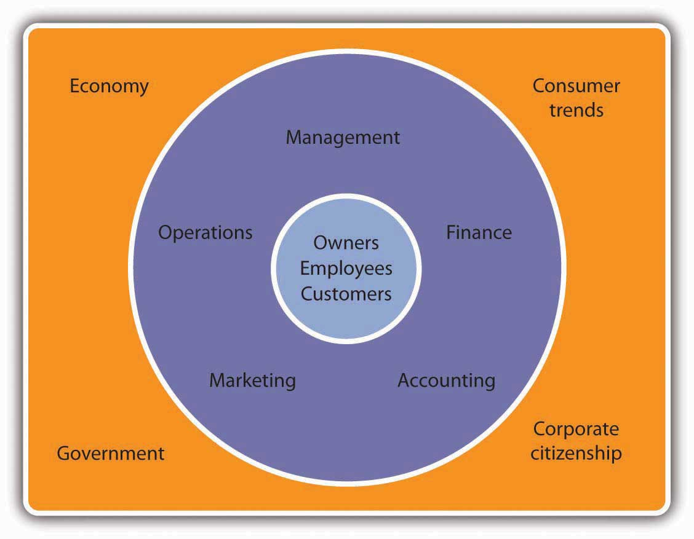

A businessActivity that provides goods or services to consumers for the purpose of making a profit. is any activity that provides goods or services to consumers for the purpose of making a profit. When Steve Jobs and Steve Wozniak created Apple Computer in Jobs’s family garage, they started a business. The product was the Apple I, and the company’s founders hoped to sell their computers to customers for more than it cost to make and market them. If they were successful (which they were), they’d make a profitDifference between the revenue that a company brings in from selling goods and services and the costs of generating this revenue..
Before we go on, let’s make a couple of important distinctions concerning the terms in our definitions. First, whereas Apple produces and sells goods (Mac, iPhone, iPod, iPad), many businesses provide services. Your bank is a service company, as is your Internet provider. Hotels, airlines, law firms, movie theaters, and hospitals are also service companies. Many companies provide both goods and services. For example, your local car dealership sells goods (cars) and also provides services (automobile repairs).
Second, some organizations are not set up to make profits. Many are established to provide social or educational services. Such not-for-profit (or nonprofit) organizationsOrganization that has a purpose other than returning profits to owners. include the United Way of America, Habitat for Humanity, the Boys and Girls Clubs, the Sierra Club, the American Red Cross, and many colleges and universities. Most of these organizations, however, function in much the same way as a business. They establish goals and work to meet them in an effective, efficient manner. Thus, most of the business principles introduced in this text also apply to nonprofits.
Let’s begin our discussion of business by identifying the main participants of business and the functions that most businesses perform. Then we’ll finish this section by discussing the external factors that influence a business’s activities.
Every business must have one or more owners whose primary role is to invest money in the business. When a business is being started, it’s generally the owners who polish the business idea and bring together the resources (money and people) needed to turn the idea into a business. The owners also hire employees to work for the company and help it reach its goals. Owners and employees depend on a third group of participants—customers. Ultimately, the goal of any business is to satisfy the needs of its customers in order to generate a profit for the owners.
The activities needed to operate a business can be divided into a number of functional areas: management, operations, marketing, accounting, and finance. Let’s briefly explore each of these areas.
Managers are responsible for the work performance of other people. ManagementProcess of planning for, organizing, directing, and controlling a company’s resources so that it can achieve its goals. involves planning for, organizing, staffing, directing, and controlling a company’s resources so that it can achieve its goals. Managers plan by setting goals and developing strategies for achieving them. They organize activities and resources to ensure that company goals are met. They staff the organization with qualified employees and direct them to accomplish organizational goals. Finally, managers design controls for assessing the success of plans and decisions and take corrective action when needed.
All companies must convert resources (labor, materials, money, information, and so forth) into goods or services. Some companies, such as Apple, convert resources into tangible products—Macs, iPhones, iPods, iPads. Others, such as hospitals, convert resources into intangible products—health care. The person who designs and oversees the transformation of resources into goods or services is called an operations managerPerson who designs and oversees the process that converts resources into goods or services.. This individual is also responsible for ensuring that products are of high quality.
MarketingMarketing is the activity, set of institutions, and processes for creating, communicating, delivering, and exchanging offerings that have value for customers, clients, partners, and society at large. consists of everything that a company does to identify customers’ needs and designs products to meet those needs. Marketers develop the benefits and features of products, including price and quality. They also decide on the best method of delivering products and the best means of promoting them to attract and keep customers. They manage relationships with customers and make them aware of the organization’s desire and ability to satisfy their needs.
Managers need accurate, relevant, timely financial information, and accountants provide it. AccountantsFinancial advisor responsible for measuring, summarizing, and communicating financial and managerial information. measure, summarize, and communicate financial and managerial information and advise other managers on financial matters. There are two fields of accounting. Financial accountants prepare financial statements to help users, both inside and outside the organization, assess the financial strength of the company. Managerial accountants prepare information, such as reports on the cost of materials used in the production process, for internal use only.
FinanceActivities involved in planning for, obtaining, and managing a company’s funds. involves planning for, obtaining, and managing a company’s funds. Finance managers address such questions as the following: How much money does the company need? How and where will it get the necessary money? How and when will it pay the money back? What should it do with its funds? What investments should be made in plant and equipment? How much should be spent on research and development? How should excess funds be invested? Good financial management is particularly important when a company is first formed, because new business owners usually need to borrow money to get started.
Figure 1.2 Business and Its Environment
Apple and other businesses don’t operate in a vacuum: they’re influenced by a number of external factors. These include the economy, government, consumer trends, and public pressure to act as good corporate citizens. Figure 1.2 "Business and Its Environment" sums up the relationship among the participants in a business, its functional areas, and the external forces that influence its activities. One industry that’s clearly affected by all these factors is the fast-food industry. A strong economy means people have more money to eat out at places where food standards are monitored by a government agency, the Food and Drug Administration. Preferences for certain types of foods are influenced by consumer trends (eating fried foods might be OK one year and out the next). Finally, a number of decisions made by the industry result from its desire to be a good corporate citizen. For example, several fast-food chains have responded to environmental concerns by eliminating Styrofoam containers.David Baron, “Facing-Off in Public,” Stanford Business, April 15, 2006, http://www.gsb.stanford.edu/news/bmag/sbsm0308/feature_face_off.shtml (accessed January 21, 2012). As you move through this text, you’ll learn more about these external influences on business. (Section 1.3 "What Is Economics?" will introduce in detail one of these external factors—the economy.)
The activities needed to run a business can be divided into five functional areas:
The Martin family has been making guitars out of its factory in Nazareth, Pennsylvania, factory for more than 150 years. In 2004, Martin Guitar was proud to produce its millionth instrument. Go to http://www.martinguitar.com to link to the Martin Guitar Web site and read about the company’s long history. You’ll discover that, even though it’s a family-run company with a fairly unique product, it operates like any other company. Identify the main activities or functions of Martin Guitar’s business and explain how each activity benefits the company.
Name four external factors that have an influence on business. Give examples of the ways in which each factor can affect the business performance of two companies: Wal-Mart and Ford.